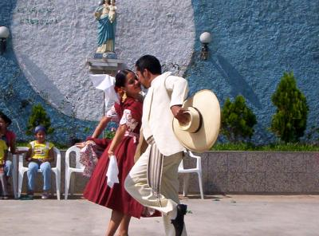

Somos un equipo interdisciplinario de estudiantes y docentes del Instituto, comprometidos con la investigación, conservación y difusión de las danzas tradicionales del Perú. Nuestra misión es promover el conocimiento y la valoración de las expresiones culturales de las regiones Costa, Sierra y Selva, fomentando el respeto por nuestras raíces y la identidad nacional.
Trabajamos en conjunto con comunidades locales, expertos y artistas para generar proyectos educativos y culturales que permitan preservar y revitalizar estas tradiciones ancestrales. Creemos en la importancia de integrar el aprendizaje académico con la práctica cultural para formar ciudadanos conscientes y orgullosos de su herencia.
